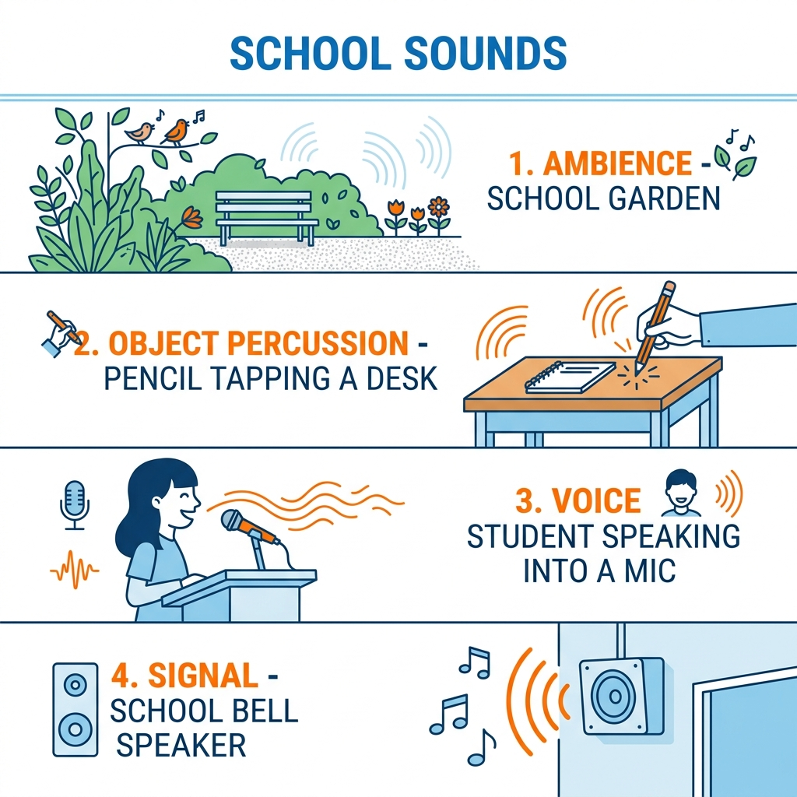

คาบที่ 2 · เทคโนโลยีดนตรีและการสร้างสรรค์เสียงด้วย AI
สวมบทบาทเป็น "นักสะสมเสียง" เรียนรู้การฟังเชิงวิเคราะห์
และเทคนิคการอัดเสียงด้วยโทรศัพท์มือถืออย่างมีจริยธรรม
โรงเรียนสุรศักดิ์มนตรี · ครูเอกณัฐ ลุผลแท้ · ม.4
สัปดาห์นี้พวกเราจะแปลงร่างเป็น "นักสะสมเสียง" ออกล่าเสียงรอบโรงเรียนเพื่อนำมาบันทึกใน Sound Diary (บันทึกเสียง) และเขียน Recording Log (บันทึกการอัดเสียง)
เป้าหมายของวันนี้: อัดเสียงรอบโรงเรียนให้ได้ 3-5 เสียง โดยแยกประเภทให้ถูกต้อง อัดเสียงให้ชัดเจน และขออนุญาตผู้ที่เกี่ยวข้องก่อนทุกครั้ง!
เมื่อก้าวเข้าไปในโรงเรียน... เราได้ยินเสียงอะไรบ้าง?
คือ เสียงโดยรอบที่เกิดขึ้นในพื้นที่หนึ่งๆ เป็นฉากหลังที่สร้างอารมณ์และบอกสภาพแวดล้อมได้ทันทีโดยไม่ต้องพูด
เสียงพัดลมครางเบาๆ, เสียงแอร์, เสียงเก้าอี้ขูดพื้นจางๆ
เสียงถ้วยชามกระทบกัน, เสียงคนคุยกันจอแจ, เสียงพัดลมระบายอากาศ
💡 **หน้าที่ในดนตรี:** ใช้สร้างมู้ด (Mood) หรือความรู้สึกเป็น Intro หรือฉากหลังของเพลง

คือ เสียงเคาะ เคาะปะทะ หรือขยำของสิ่งต่าง ๆ รอบตัวที่ไม่มีชีวิต สามารถนำมาจัดทำเป็น "จังหวะ" แทนกลองได้
เสียงกดปากกา, เคาะกล่องดินสอ, เคาะโต๊ะไม้/เหล็ก, พลิกหนังสือ
เสียงเขย่าขวดน้ำพลาสติก, เคาะกุญแจ, เสียงเปิดถุงขนม
เสียงตบมือ, เสียงดีดนิ้ว, เสียงกระทืบเท้า, ตบอก
ไอเดียสร้างสรรค์: ในห้องอัดดนตรีจริง บ่อยครั้งที่ศิลปินเลือกใช้เสียงเดาะลูกบาสเกตบอล หรือเสียงเคาะช้อนแทนเสียงกลองเพื่อให้เพลงมีเอกลักษณ์แปลกใหม่!
คือ เสียงที่เกิดขึ้นจากปากและเส้นเสียงของมนุษย์ เป็นตัวดำเนินเรื่องและสื่อสารข้อความหรือทำนองตรงๆ
ประโยคสั้นๆ เช่น "ยินดีต้อนรับสู่ม.4!", "พร้อมลุยกันหรือยัง?"
การทำเสียงหึ่งๆ ในลำคอเป็นทำนองคร่าวๆ (อือ~ ฮึม~)
เสียงบ่นพึมพำ ท่องสูตรคูณ หรือการตะโกนพร้อมกันเป็นกลุ่ม
💡 **วิชานี้:** เราไม่จำเป็นต้องร้องเพลงเก่งหรือร้องเสียงตรงคีย์ แค่มีเสียงพูดที่มีความหมายหรือเสียงฮัมทำนองสั้น ๆ ก็เพียงพอที่จะเป็นไอเดียตั้งต้นให้ AI ไปต่อยอดได้แล้ว
คือ เสียงที่ตั้งใจออกแบบมาเพื่อสื่อสารข้อมูล เตือน หรือดึงดูดความสนใจ มักจะมีจังหวะและความถี่ที่เฉพาะเจาะจง
เสียงบอกเวลาเปลี่ยนคาบเรียน
เสียงแจ้งเตือนไลน์หรือริงโทนมือถือ
เสียงแจ้งเตือนผ่านลำโพงของโรงเรียน
เสียงปรี๊ดบอกสัญญาณในสนามกีฬา
ตัวอย่างการใช้งาน: เราสามารถนำเสียงออดโรงเรียนสั้นๆ มาทำเป็นท่อนสลับเปลี่ยนห้องเพลง (Transition) หรือเสียงเตือนไลน์มาใส่ตอนเริ่มเพลงเพื่อดึงความสนใจผู้ฟัง
คลิกเลือกเสียงด้านซ้าย จากนั้นกดเลือกประเภทเสียงด้านขวาให้ตรงกัน!
มือถือของคุณ = สตูดิโอบันทึกเสียงส่วนตัวพกพา
ตำแหน่งรูไมโครโฟนของมือถือส่วนใหญ่อยู่ด้านล่างเครื่อง การเว้นระยะห่างมีผลต่อเสียงอย่างมหาศาล:
ห่างประมาณ 1 คืบมือ เหมาะกับเสียงพูด ร้องเพลง หรือฮัม เสียงจะชัดเจน มีมิติเป็นธรรมชาติ และไม่มีเสียงลมปะทะ
เสียงจะลมปะทะแรง (เสียงพ่นลมจากปาก) คลื่นเสียงมีความแรงสูงจน "ตัดหัว" ทำให้เกิดอาการ เสียงแตกพร่า (Clipping) ฟังไม่รู้เรื่อง
เสียงเป้าหมายจะเบาลงอย่างมาก และระบบไมค์จะเร่งเสียงรบกวน (Noise) ของสภาพแวดล้อมโดยรอบเข้ามาปะปนแทน
ลองเลื่อน Slider ปรับระยะห่างระหว่างไมค์โทรศัพท์กับปากเพื่อดูลักษณะคลื่นเสียงที่เปลี่ยนไป
💡 **ระยะ 25 ซม. (ประมาณ 1 คืบ):** เป็นระยะมาตรฐานที่ทำให้เสียงพูดของคุณเคลียร์ใส ชัดเจน และไม่มีลมพ่นกระแทกไมโครโฟน!
ไมโครโฟนมือถือจะรับทุกเสียงที่มันได้ยิน วิธีอัดเสียงให้คุณภาพดีง่ายๆ:
ทริคพิเศษ: หากต้องการอัดเสียงปากกาเคาะโต๊ะ ให้วางกระดาษหรือผ้าบางๆ รองใต้แท่นเคาะ เพื่อลดเสียงสะท้อนจากพื้นผิวแข็งที่อาจดังเกินไปและเสียงแห้งเกินไป
เมื่อได้ไฟล์เสียงที่ดีแล้ว เพื่อสะดวกในการตัดต่อบน BandLab สัปดาห์ต่อไป เราควรจัดระบบดังนี้:
หลีกเลี่ยงชื่ออัตโนมัติเช่น Recording_01.m4a ให้ปรับเป็น:
amb_canteen.m4a (เสียงโรงอาหาร)perc_desk.m4a (เสียงไม้บรรทัดเคาะโต๊ะ)voice_hello_ton.m4a (เสียงต้นทักทาย)สร้างโฟลเดอร์งานวิชาคอมดนตรีใน Google Drive เพื่อรวบรวมไฟล์เสียงอัดทั้งหมดของกลุ่ม ช่วยให้เพื่อนร่วมทีมนำไปดาวน์โหลดใช้ทำงานต่อได้ทันที
ข้อดีของการจัดไฟล์: เวลาใส่ track ใน BandLab จะทำให้เรารู้ทันทีว่าควรหยิบไฟล์ไหนใส่ track ใด โดยไม่ต้องเสียเวลาเปิดฟังกดทีละไฟล์เพื่อเดาเสียง
เสียงไม่ใช่แค่คลื่น แต่มีเจ้าของและความเป็นส่วนตัว
การเก็บเสียงหรือบันทึกเสียงของผู้อื่นโดยที่เจ้าตัวไม่รับรู้หรือไม่ได้อนุญาต ถือเป็นการละเมิดสิทธิ์ความเป็นส่วนตัวและมารยาททางสังคมที่ร้ายแรง
คลิกการ์ดแต่ละใบเพื่อดูเฉลยและการวิเคราะห์
อัดเสียงนกหวีด เสียงเชียร์ ในสนามฟุตบอลโรงเรียน
กดดูวิเคราะห์ ↓
✅ ทำได้ทันที (เหมาะสม)
เพราะเป็นเสียงบรรยากาศสาธารณะ (Ambience) ที่ไม่ได้ตั้งใจระบุเสียงส่วนตัวหรือเสียงเจาะจงของบุคคลใดบุคคลหนึ่งเพื่อการล้อเลียนหรือละเมิด
แอบวางโทรศัพท์ใต้โต๊ะเพื่อเก็บเสียงเพื่อนบ่นถึงคนอื่นไปใส่ในเพลง
กดดูวิเคราะห์ ↓
❌ ห้ามทำเด็ดขาด (ไม่เหมาะสมอย่างยิ่ง)
เป็นการแอบบันทึกเรื่องราวส่วนตัวโดยเพื่อนไม่รู้ตัว ผิดทั้งจริยธรรมอย่างร้ายแรงและกฎหมายความเป็นส่วนตัว (PDPA)
ให้เพื่อนร้องทำนองให้ฟังและบอกจุดประสงค์ว่าจะนำไปใส่ในเดโม
กดดูวิเคราะห์ ↓
✅ ทำได้ (เหมาะสมและถูกต้อง)
เนื่องจากเป็นการระบุและแจ้งขอความยินยอม (Consent) อย่างชัดเจนและบอกวัตถุประสงค์การใช้งานเรียบร้อยก่อนทำการกดอัด
ขออนุญาตเข้าไปนั่งฟังแล้วยกมือถืออัดเสียงกลองระหว่างซ้อม
กดดูวิเคราะห์ ↓
✅ ทำได้ (เหมาะสม)
การอัดทำได้เนื่องจากได้เข้าพบและแจ้งอนุญาตกับผู้ควบคุมวงหรือตัวแทนทีมเพื่อนำคลิปไปทดลองตัดต่อทางการเรียนแล้ว
ได้เวลาหยิบโทรศัพท์ออกลุยงานจริงข้างนอกแล้ว!
หลังจากการเดินอัดเสียงเสร็จสิ้น ให้นักเรียนกรอกข้อมูลในใบงานที่ 1 และ 2 ดังนี้:
| 📝 ใบงานที่ 1: Sound Diary | 🎙️ ใบงานที่ 2: Recording Log (รายละเอียดการบันทึก) |
|---|---|
|
• **เสียงที่อัด:** ชื่อเรียกเสียง เช่น เสียงเปิดหนังสือ • **สถานที่/แหล่งเสียง:** ห้องสมุด • **ลักษณะเสียง:** สั้นๆ คมๆ แกรกๆ • **อารมณ์ที่เกิดขึ้น:** สงบ มีสมาธิ • **การนำไปใช้:** ใส่ท่อนเริ่มก่อนแร็ป |
• **ชื่อไฟล์เสียง:** ตั้งชื่อให้สอดคล้อง เช่น perc_book.wav• **ระยะห่างจากแหล่งเสียง:** เช่น 20 เซนติเมตร • **เสียงรบกวน:** มีเสียงคุยกันจางๆ ในระยะไกล • **การขออนุญาต:** ขออนุญาตคุณครูบรรณารักษ์ก่อนอัดแล้ว • **แนวทางแก้ไข:** ครั้งหน้าจะหามุมเงียบกว่านี้ |
ลองกดเลือกรายละเอียดเสียงจำลอง เพื่อซ้อมบันทึกข้อมูลก่อนลงพื้นที่จริง
📍 สถานที่
🔊 เสียงที่จะอัด
⚙️ ประเภทเสียง
🎭 อารมณ์ความรู้สึก
ให้นักเรียนแต่ละกลุ่มจับมือถือ แล้วเดินสำรวจเพื่อบันทึกเสียงตามพื้นที่ต่างๆ ของโรงเรียน
วันนี้พวกเราได้เรียนรู้วิธีการทำความเข้าใจกับเสียงรอบตัวและการเก็บเสียงอย่างถูกต้อง
👇 สไลด์ถัดไปจะเป็นแบบทดสอบเก็บคะแนนสะสม 10 ข้อ
แบบทดสอบเก็บคะแนนท้ายบทเรียน